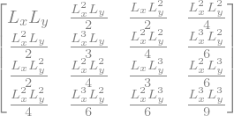
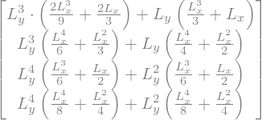
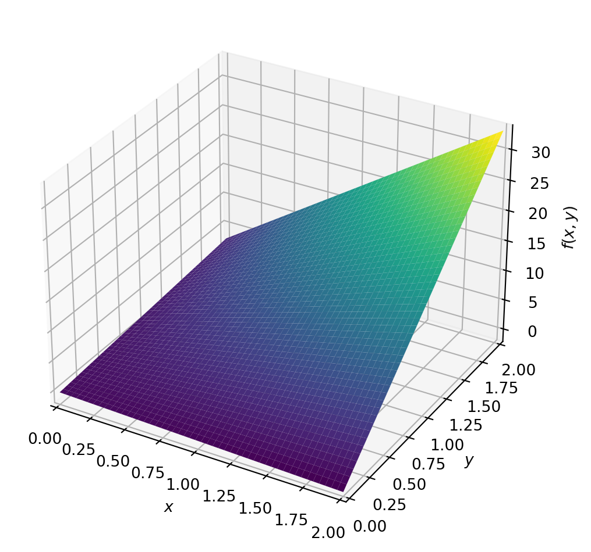
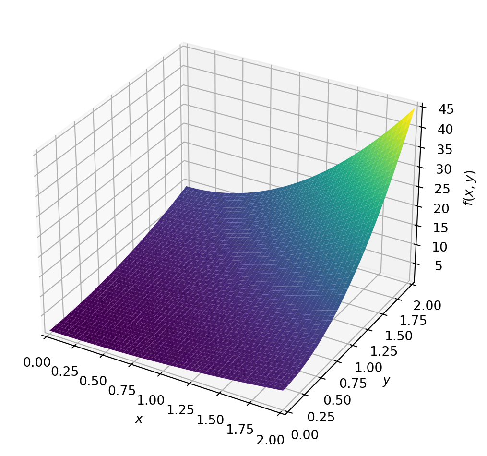

2d Basis funtions as tensor products of 1D functions
Tensor producs
Given two vectors \(\mathbf{u} = (u_1, u_2, \ldots, u_n)\) and \(\mathbf{v} = (v_1, v_2, \ldots, v_m)\), the tensor product \(\mathbf{u} \otimes \mathbf{v}\) is defined as
\[\mathbf{u} \otimes \mathbf{v}= \begin{bmatrix} u_1 v_1 & u_1 v_2 & \cdots & u_1 v_m \\ u_2 v_1 & u_2 v_2 & \cdots & u_2 v_m \\ \vdots & \vdots & \ddots & \vdots \\ u_n v_1 & u_n v_2 & \cdots & u_n v_m \end{bmatrix}\]
Given the vector spave \(V_x\) and \(V_y\), with basis \(\{\phi_i(x)\}_{i\in\mathbf{I}_x}\) \(\{\phi_j(y)\}_{j\in\mathbf{I}_y}\)and the tensor product space \(V=V_x \otimes V_y\) is defined as
\[V = \{\phi_i(x) \phi_j(y)\}_{i\in\mathbf{I}_x, j\in\mathbf{I}_y}\]
The notation for a basis function in \(V\) is \(\phi_{i,j}(x,y)=\hat{\phi}_i(x)\hat{\phi}_j(y)\).
We can be written a function \(u(x,y)\) in \(V\) as \[u=\sum_{i\in\mathbf{I}_x} \sum_{j\in\mathbf{I}_y} c_{i,j} \phi_{i,j}(x,y)\] Thus, we can use the alternative notation, we may employ a singel index, \(u=\sum_{k\in\mathbf{I}_x \times \mathbf{I}_y} c_k \phi_k(x,y)=\sum_{k\in\mathbf{I}_s} c_k \phi_k(x,y)\).
Example
Let consider an approximation with the last squares, we have the following sets \(V_x=\{1,x\}\) and \(V_y=\{1,y\}\), thus we define the dyadi product as
\[V=V_x \otimes V_y = \{1, x, y, xy\}\]
Wee ca approximate the function \(u(x,y)=(1+x^2)(1+2y^2)\) in \(\Omega=[0,L_x]\times[0,L_y]\). So the function \(u\) can be approximated by least squares method as
\[u(x,y) \approx \sum_{k\in\mathbf{I}_s} c_k \phi_k(x,y) = \sum_{k\in\mathbf{I}_s} c_k \hat{\phi}_i(x)\hat{\phi}_j(y)\]
where \(\mathbf{I}_s=\{1,2,3,4\}\) and \(\hat{\phi}_i(x)=\{1,x\}\) and \(\hat{\phi}_j(y)=\{1,y\}\).
Thus, \[A_{ij} = \int_{\Omega} \phi_i(x,y) \phi_j(x,y)\ d\Omega=\int_0^{L_x}\int_0^{L_y} \phi_i(x,y) \phi_j(x,y)\ dx dy,,\]
thus, the matrix \(A\) is given by
and b is given by

If \(L_x=2\) and \(L_y=2\), we have the following matrix
\[A=\begin{bmatrix} 4 & 4 & 4 & 4 \\ 4 & \frac{16}{3} & 4 & \frac{16}{3} \\ 4 & 4 & \frac{16}{3} & \frac{16}{3} \\ 4 & \frac{16}{3} & \frac{16}{3} & \frac{16}{3} \end{bmatrix},\]
and the vector \(b\) is given by
\[b=\begin{bmatrix} \frac{308}{9} \\ \frac{140}{3} \\ 44 \\ 60 \end{bmatrix},\]
thus, we obtain the vector \(c\) as
\[c=\begin{bmatrix} -\frac{1}{9} \\ -\frac{2}{3} \\ \frac{4}{3} \\ 8 \end{bmatrix}.\]

u(x,y)= 8*x*y - 0.666666666666667*x + 1.33333333333333*y - 0.111111111111111Approximation of \(u(x,y)\) using the least squares method

u(x,y)= (x**2 + 1)*(2*y**2 + 1)Approximation of \(u(x,y)\)